This post compares three agent frameworks across four progressively harder patterns. The goal is not to crown a single universal winner, but to show which design choice helps most when the workload changes.
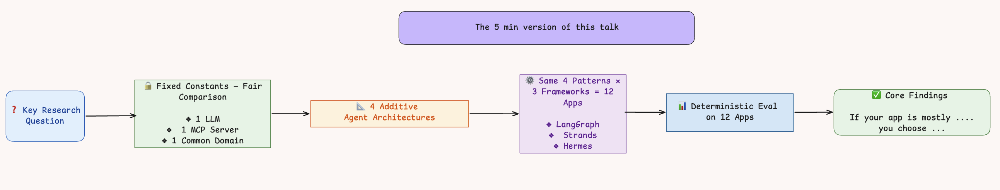
| Pattern | Key Capability | Description |
|---|---|---|
| P1 | MCP tools | AI Agent with 2 Numeric Tools |
| P2 | +RAG tool | Same AI Agent with 2 Numeric Tools + 1 Semantic Retrieval Tool |
| P3 | +Skills | Same AI Agent with same tools + Skills |
| P4 | +Memory +chat | Same AI Agent with memory & terminal chat |
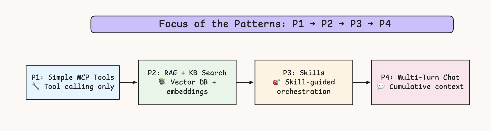
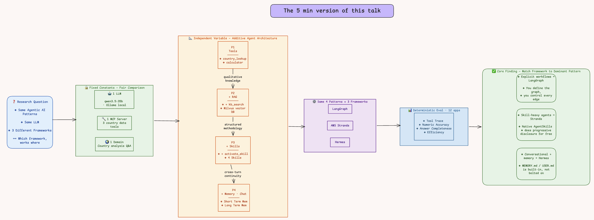
The four patterns below move from basic tool use to retrieval, skills, and multi-turn memory, so you can see how each framework behaves as the orchestration problem becomes more demanding.
| Pattern | Key Capability | Description |
|---|---|---|
| P1 | MCP tools | AI Agent with 2 Numeric Tools |
| P2 | +RAG tool | Same AI Agent with 2 Numeric Tools + 1 Semantic Retrieval Tool |
| P3 | +Skills | Same AI Agent with same tools + Skills |
| P4 | +Memory +chat | Same AI Agent with memory & terminal chat |
Progressive Design : * Layer one new behavior at a time and measure impact
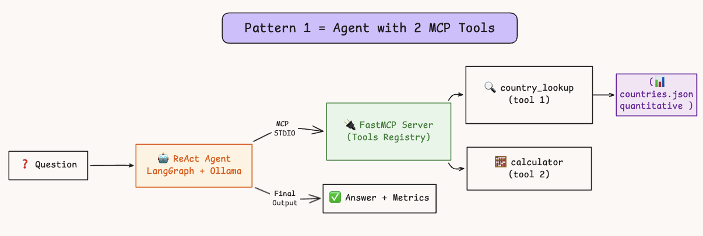
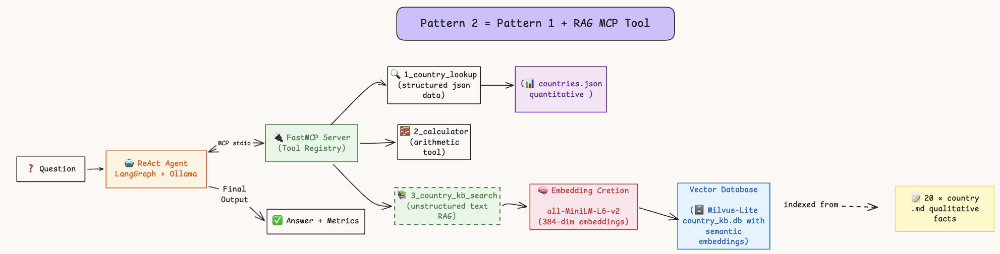
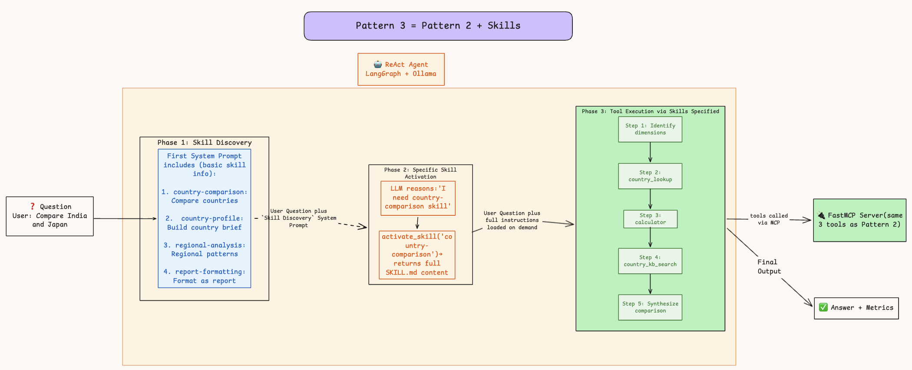
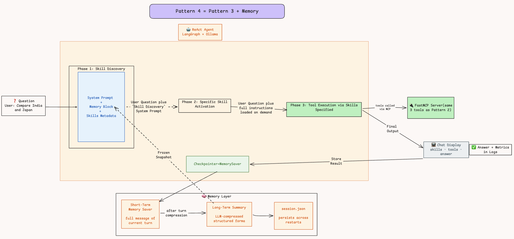
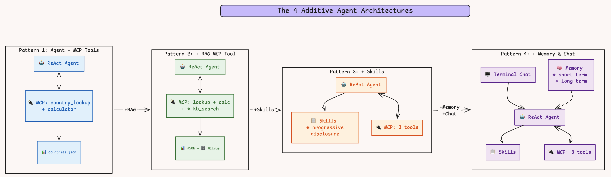
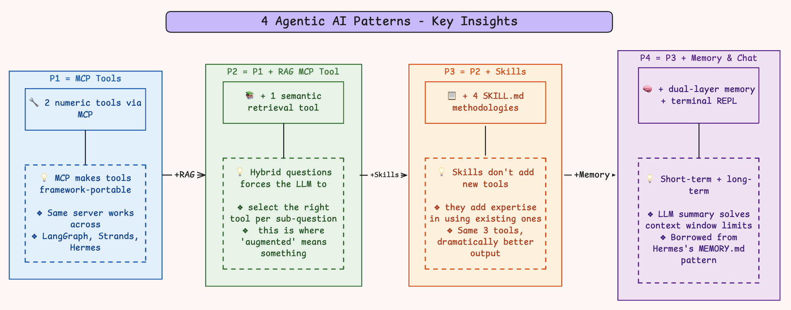
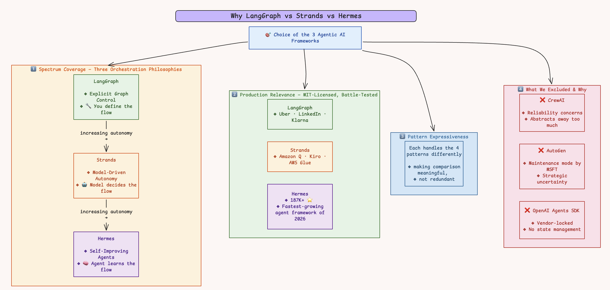
These tables summarize the 40+ experiments in this post. The benchmark keeps the model, tools, and prompts fixed so the framework design is the main variable.
Core Question: Which framework should you use — and when?
Alt Question: If you’re building a custom framework, what’s the best feature to borrow from each?
| Common Factor | Description |
|---|---|
| Model | qwen3.5:35b-a3b-coding-nvfp4 (local Ollama — identical across all 3) |
| Tools | Same MCP (Model Context Protocol) server across 3 frameworks |
| Prompts | Uniform across 3 frameworks |
| Framework | Language | Architecture | Key Characteristic |
|---|---|---|---|
| LangGraph | Python | Graph-based state machine | Nodes → edges → conditional routing |
| AWS Strands Agents | Python | AWS-native agent SDK | MCP subprocess isolation, event-driven |
| Hermes | Python | Custom agent (evolved during experiments) | Fixed orchestration loop, uv-based packaging |
| Pattern | What It Tests | Key Challenge |
|---|---|---|
| P1 Simple MCP Tools | Basic tool calling + answer synthesis | Can the agent call tools and synthesize a coherent answer? |
| P2 RAG + KB Search | Vector DB retrieval + knowledge grounding | Can the agent combine structured + unstructured knowledge? |
| P3 Skills | Skill-guided multi-tool orchestration | Can the agent choose the right skill and follow its workflow? |
| P4 Multi-Turn Chat | Cumulative conversation context | How does cost scale with conversation depth? |
There is no universal winner in this benchmark. The right framework is pattern-dependent:
| If you need… | Use… | Why |
|---|---|---|
| Simple tool orchestration | Hermes | Fastest, lightest (9.5s, 49 MB, 267 deps) |
| RAG-powered search | Strands | Lowest memory (44 MB), fastest RAG latency |
| Complex multi-skill workflows | LangGraph | 100% accuracy, best multi-skill orchestration |
| Multi-turn chatbot | Hermes | Flat O(1) LLM scaling — cost doesn’t grow with depth |
| Framework | Gold Medals (🥇) | Silver (🥈) | Bronze (🥉) |
|---|---|---|---|
| Hermes | 2 (P1, P4) | 2 (P2, P3) | 0 |
Can the agent call tools and synthesize a coherent answer?
| Metric | LangGraph | Strands | Hermes | 🏆 |
|---|---|---|---|---|
| Avg Latency | 12.4 s | 11.5 s | 9.5 s | Hermes |
| Avg Tokens | 3,140 | 3,559 | 3,092 | Hermes |
| Peak Memory | 58.6 MB | 41.1 MB | 51.1 MB | Strands |
| Packaging | 76.9 MB | 72.8 MB | 49.3 MB | Hermes |
| Dependencies | 175 | 142 | 101 | Hermes |
| Answer Quality | 100% (4/4) | 50% (2/4) | 75% (3/4) | LangGraph |
🏆 Winner: Hermes — in this setup, it was the fastest and lightest option with the fewest dependencies.
- ⚠️ With same prompt, same tools and same LLM, across 3 frameworks, Strands returned raw tool output in 2/4 experiments.
- LangGraph was the only framework with perfect answer quality (100%)
- Improving answer quality in both Strands and Hermes was possible with explicit additional system prompt instructions like below
_SYNTHESIS_SUFFIX = (
"\n\nIMPORTANT: After using tools, you MUST always provide a final "
"natural-language answer that synthesizes the results. "
"Never end your response with just a tool call."
)Can the agent combine structured data with vector-retrieved knowledge?
| Metric | LangGraph | Strands | Hermes | 🏆 |
|---|---|---|---|---|
| Avg Latency | 31,758 ms | 29,396 ms | 32,849 ms | Strands |
| Avg Tokens | 2,627 | 3,688 | 2,898 | LangGraph |
| Peak Memory | 133.6 MB | 44.0 MB | 54.2 MB | Strands |
| Packaging | 984.8 MB | 996.8 MB | 967.2 MB | Hermes |
| Answer Quality | 100% | 100% | 100% | Tie |
🏆 Winner: Strands — in this setup, it combined the fastest latency with the lowest memory (44 MB vs 134 MB LangGraph).
- The RAG stack added ~900 MB to the packaging of all frameworks.
- Strands’ and Hermes’ MCP subprocess isolation kept their memory lower by running embeddings in a separate process. LangGraph loaded everything in-process → 134 MB.
Can the agent choose the right skill and follow its guided workflow?
| Metric | LangGraph | Strands | Hermes | 🏆 |
|---|---|---|---|---|
| Avg Latency | 40,093 ms | 34,684 ms | 37,915 ms | Strands |
| Avg Tokens | 9,499 | 14,154 | 8,031 | Hermes |
| Peak Memory | 134.6 MB | 45.6 MB | 54.4 MB | Strands |
| Factual Accuracy | 100% (4/4) | 100% (4/4) | 75% (3/4) | LG / Strands |
| Skill Utilization | 5/5 correct | 5/5 correct | 4/5 (wrong skill) | LG / Strands |
🏆 Winner: LangGraph — 100% factual accuracy, correct multi-skill orchestration.
Hermes chose the wrong skill for the European GDP question, causing it to miss Russia — factual error (14.98T instead of 17.05T). Strands self-corrected name lookup failures (
UK→United Kingdom).
How does cost scale as conversation history accumulates?
| Metric | LangGraph | Strands | Hermes | 🏆 |
|---|---|---|---|---|
| LLM Call Growth (T1→T4) | 4→14 (3.5×) | 6→33 (5.5×) | 4→3 (0.75×) | Hermes |
| Token Growth (T1→T3) | 4.6× | 8.4× | 2.6× | Hermes |
| T2-T4 Avg Latency | 62.8s | 24.5s | 34.8s | Strands |
| Context Test (“Same for Brazil”) | ✅ Pass | ⚠️ Partial (3-way) | ❌ Fail (did Brazil vs Japan; should have been Brazil vs India) | LangGraph |
| Error Recovery (T4) | Correct from beginning | Correct from beginning | ✅ Russia→Russian Fed. | All 3 |
🏆 Winner: Hermes — in this setup, it showed the flattest O(1) LLM scaling and the most token-efficient growth (2.6× vs Strands 8.4×).
| Good at | Bad at | |
|---|---|---|
| Hermes | Not wasting tokens re-processing history (2.6× growth) | Understanding what history implies (“Same for Brazil” → ❌) |
| LangGraph | Deep context reasoning | Linear growth in (4→14) LLM calls |
Key Insight:
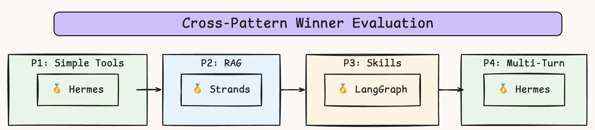
| Framework | Best | Worst |
|---|---|---|
| LangGraph | 100% accuracy across P1+P3 | 134 MB memory, slowest latency |
| Strands | 44 MB memory, 18s warm turns | 33 LLM calls by Turn 4, very high - 124K tokens - consumption |
| Hermes | O(1) scaling, 2.6× token growth | ❌ Failed context test, missed Russia |
Knowing the architectural choices baked into a framework’s philosophy helps unearth weaknesses before production, not after.
| Framework | Architecture Philosophy | Weakness It Causes |
|---|---|---|
| LangGraph | Graph-based state machine — re-evaluate at every node | LLM calls grow linearly (4→14); memory loaded in-process (134 MB) |
| Strands | Full context replay — every LLM call sees everything | Tokens explode (9.9K→124K); Too high token consumption as turns increase |
| Hermes | Fixed orchestration loop — plan once, execute, answer | Shallow reasoning over history; fails implicit references (“Same for Brazil” → ❌) |
None of these showed up in Pattern 1. All of them showed up by Pattern 4. The architecture didn’t change — the workload revealed it.
Standard metrics (latency, tokens, memory) tell you how fast. Designed tests tell you how wrong.
| What We Measured | What We Discovered | How |
|---|---|---|
| Latency, tokens, memory | Hermes is fastest, cheapest | Standard metrics |
| “Same for Brazil” | Hermes drops context entirely | Designed test |
| “Most populous European country” | Same model, different framework → different answer | Designed test |
| European GDP total | Hermes picked wrong skill → missed a country | Designed test |
Every ❌ in this evaluation was caught by a designed test, not a dashboard metric. If we’d only measured speed and cost, Hermes would look flawless.
Remove RAG; include Karpathy’s LLM Wiki pattern.
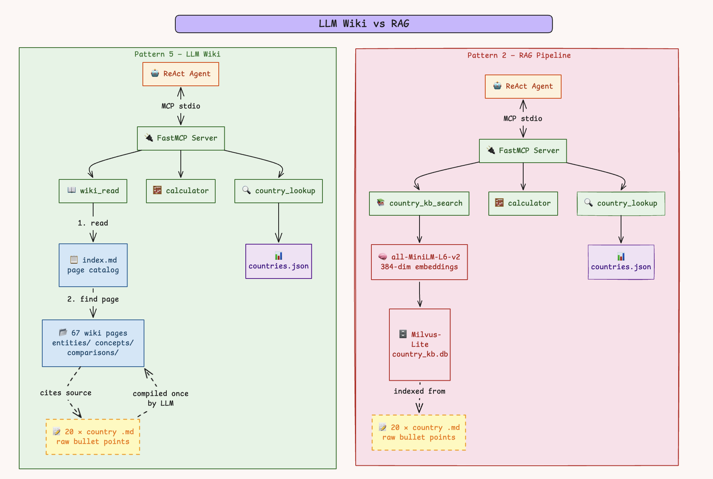
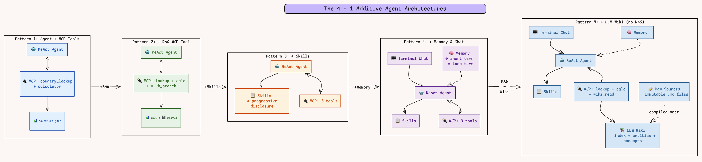
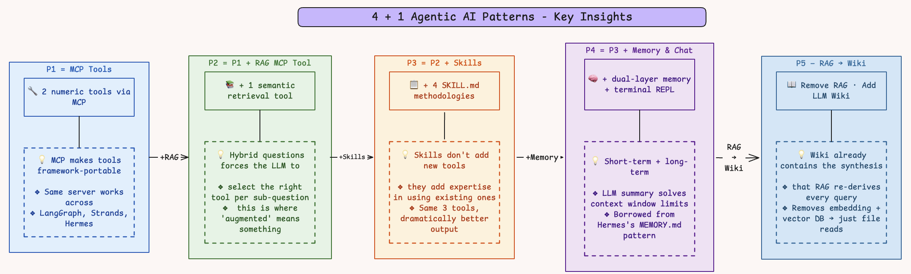
For the next iteration:
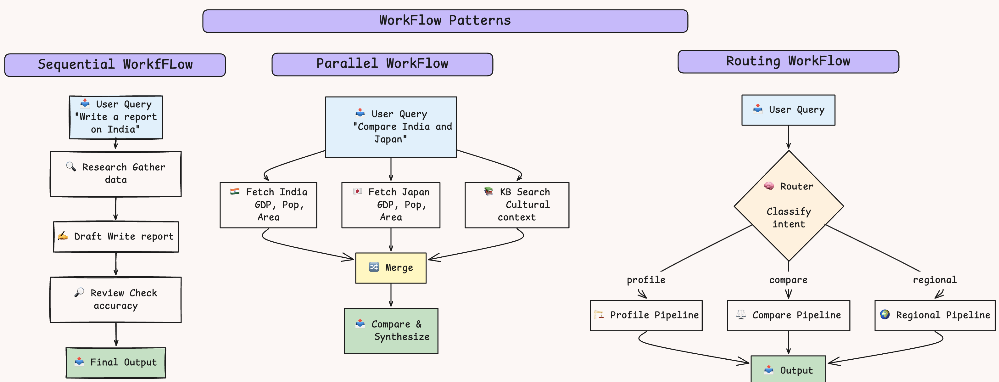
temporal (python/typescript), pydantic ai (python), rig (rust)Reproducibility note: These results reflect one local Ollama-based benchmark run with the same model, the same MCP tools, and the same prompts across all three frameworks. If you rerun them with a different model or different tool behavior, the rankings may change.
Follow below links for reading material on Agentic AI, each expanding on the link above that.
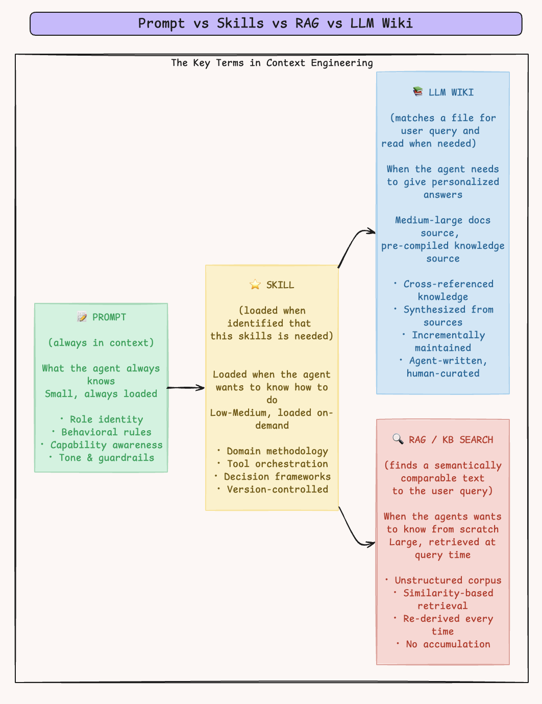